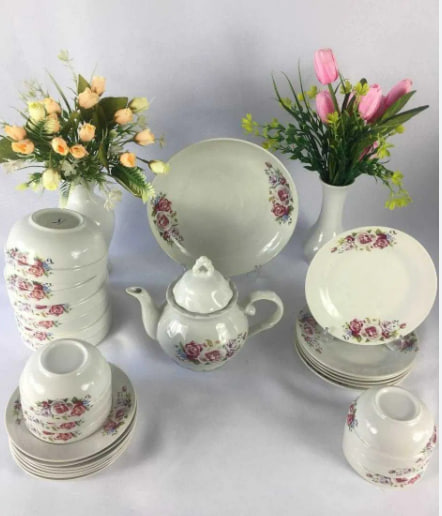
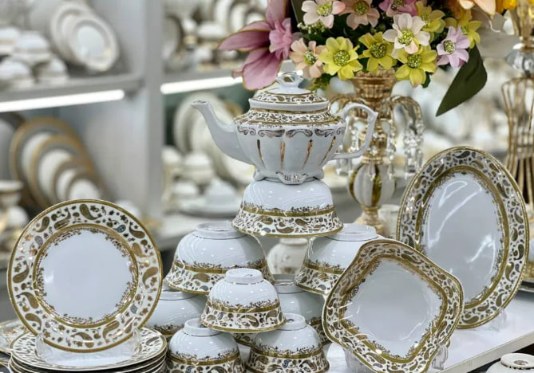

4-Sarlavha

YANGILIKLAR
Chinni idishlar bilan bog'liq so'nggi yangiliklar va tendensiyalar haqida bir nechta qiziqarli ma'lumotlarni taqdim etaman:
Ekologik toza materiallar: Ko'plab ishlab chiqaruvchilar chinni idishlar uchun ekologik toza va qayta ishlanadigan materiallarni qo'llashga o'tmoqda. Bu jarayon, atrof-muhitni muhofaza qilish va barqaror ishlab chiqarishni ta'minlash maqsadida amalga oshirilmoqda. Zamonaviy dizayn: An'anaviy chinni idishlar yangi zamonaviy dizaynlar va ranglar bilan to'ldirilmoqda. Bu, ayniqsa, yosh avlod orasida mashhur bo'lib bormoqda.
Onlayn savdo: Chinni idishlarni sotish bo'yicha onlayn platformalar soni ortib bormoqda. Bu, xaridorlarga ko'plab variantlarni tez va qulay topish imkonini beradi. Kolleksiyalar va cheklangan seriyalar: Ba'zi brendlar mashhur san'atkorlar yoki dizaynerlar bilan hamkorlik qilib, cheklangan seriyadagi chinni idishlarni ishlab chiqmoqda. Bu, kolleksionerlar va san'at ixlosmandlari uchun qiziqarli bo'lishi mumkin. Himoya va saqlash yechimlari: Chinni idishlarni transport qilish va saqlashda yangi texnologiyalar va o'ralash materiallari qo'llanilmoqda, bu esa mahsulotlarning shikastlanishini kamaytiradi.